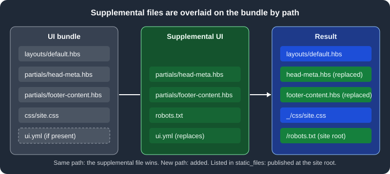

Supplemental UI
|
This content was generated with the assistance of AI and should be verified against the official documentation before being relied on in production. |
This page was written against Antora 3.2.1 and the Antora Default UI, and checked on 2026-10-26. The supplemental UI is a set of extra files that Antora lays over the loaded UI bundle when it builds a site. It is meant for a few small adjustments, such as a favicon, a verification meta tag or a footer line, when an off-the-shelf bundle is almost right. The official documentation says plainly that it should not replace developing a custom bundle; when the changes grow past a handful of files, move them into a bundle as described in Building a Custom UI.
How the overlay works
Antora first loads the bundle named by ui.bundle.url, then adds the supplemental files on top of it, matching files by
their path inside the UI. The rules are short:
-
A supplemental file whose path is not in the bundle is added.
-
A supplemental file whose path is in the bundle replaces the bundle’s file completely. There is no merging of contents, so replacing a partial means rewriting all of it.
-
The supplemental files are not otherwise processed; they are not compiled or checked before the site is generated.
The paths are the paths inside the UI, for example partials/head-meta.hbs or css/site.css, which are the same
paths the bundle uses. The figure shows an overlay with two replaced partials, one new static file and one replaced
descriptor.

Figure: files with the same path are replaced, new paths are added, and files named in ui.yml go to the site root.
Supplemental files change what the templates see, so the template syntax and the UI model are the ones described in
Templates and the UI Model. Because the Default UI
partials are small and named by purpose (head-meta, head-scripts, footer-content, footer-scripts and others),
many customisations are a one-file replacement.
The two forms of supplemental_files
The ui.supplemental_files key of the playbook accepts one of two value types. They are mutually exclusive: the
value is either a directory or a list of virtual files, never both.
| Form | YAML value | Use it when |
|---|---|---|
Directory |
A string, the path of a folder. |
There are several files, binary files such as icons, or files shared by more than one playbook. |
Virtual files |
A list of entries, each with |
There are only a few small files and you want everything visible in the playbook. |
Directory form
When the value is a string, Antora treats it as the root of a UI hierarchy and adds every file found under it. A relative path is expanded with these rules:
-
A first segment of
~is resolved against the home directory of the user. -
A first segment of
.is resolved against the folder that contains the playbook file. -
A first segment of
~+, or no prefix at all, is resolved against the current working directory.
Prefer ./supplemental-ui, so the build does not depend on where it was started. This example replaces the
head-meta partial of the Default UI, which is an empty hook for extra meta tags, with one that renders a site
verification tag. Pocket Units, the running example of this section, keeps the files in a supplemental-ui folder next
to the playbook:
antora-playbook.yml
supplemental-ui/
├── .nojekyll
├── robots.txt
├── ui.yml
└── partials/
├── footer-content.hbs
└── head-meta.hbs{{#with site.keys.googleSiteVerification}}
<meta name="google-site-verification" content="{{this}}">
{{/with}}Source: Antora docs: Supplemental UI
The partial reads site.keys.googleSiteVerification, a value the playbook supplies under site.keys. A replacement
footer for the Default UI is just as small:
<footer class="footer">
<p>Pocket Units documentation. Built with Antora.</p>
</footer>Source: Antora docs: Supplemental UI
User-agent: *
Allow: /Source: Antora docs: Supplemental UI
static_files:
- .nojekyll
- robots.txtSource: Antora docs: Supplemental UI
The playbook then points at the folder. The site.keys value is a placeholder, not a real token:
site:
title: Pocket Units Docs
url: http://localhost:5252
start_page: pocket-units::index.adoc
keys:
googleSiteVerification: '<YOUR_SITE_VERIFICATION_TOKEN>'
content:
sources:
- url: ../antora/src/pocket-units
branches: [v1.0, v2.0]
- url: ../antora/src/shared
branches: main
ui:
bundle:
url: ../ui/antora-ui-default/build/ui-bundle.zip
supplemental_files: ./supplemental-ui
output:
dir: build/dirSource: Antora docs: Supplemental UI
This example was run with Antora 3.2.1 and a Default UI bundle built from a clone of its repository. The site root of
the result contained the two static files next to the usual output, and the head of index.html carried the
verification tag from the placeholder value:
$ ls -A build/dir
.nojekyll 404.html _ index.html pocket-units robots.txt shared
sitemap-pocket-units.xml sitemap-shared.xml sitemap.xmlVirtual files form
When the value is a list, each entry is a virtual file with two keys:
| Key | Meaning |
|---|---|
|
The relative path of the file in the UI, for example |
|
Optional. Either the text of the file, or the path of a file on disk to read it from. When it is omitted Antora creates an empty file. |
The same customisation written in the playbook, mixing the three ways to give contents (a path to a file, inline text and none at all):
ui:
bundle:
url: ../ui/antora-ui-default/build/ui-bundle.zip
supplemental_files:
- path: partials/head-meta.hbs
contents: ./supplemental-ui/partials/head-meta.hbs
- path: partials/footer-content.hbs
contents: |
<footer class="footer">
<p>Pocket Units documentation. Built with Antora.</p>
</footer>
- path: robots.txt
contents: |
User-agent: *
Allow: /
- path: .nojekyll
- path: ui.yml
contents: |
static_files:
- .nojekyll
- robots.txtSource: Antora docs: Supplemental UI
This build produced the same site root as the directory form. Inline contents are convenient for tiny files, and a
contents path keeps larger ones in their own file; the official advice is to keep small files in the playbook and
move larger ones, or ones shared between playbooks, to separate files.
A list entry that is a plain string is not an error. Replacing the entries above with the line
- ./supplemental-ui followed by a real entry built without any error in this check, but the string contributed no
files: the footer text was absent from the page. To use a folder, put the path directly under supplemental_files,
not inside a list.
Static files and the ui.yml rule
By default, a publishable asset from the supplemental UI (an image, a script) is written into the UI output directory,
which is _ unless ui.output_dir changes it. Some files must live at the site root instead: favicon.ico,
robots.txt, .nojekyll, a domain verification file. Those are called static files, and they are identified by the
UI descriptor ui.yml:
static_files:
- favicon.icoSource: Antora docs: Supplemental UI
The static_files key takes a list of strings, each the path of the file inside the UI, without a leading slash.
The descriptor itself must be provided by the supplemental UI for this to work, so with the virtual files form there
must be two entries: the file and the ui.yml that lists it.
Without the descriptor the file still ships, but under _. Omitting ui.yml while supplying robots.txt as a virtual
file was tested and gave _/robots.txt and no file at the site root. That is rarely what a search engine needs.
A supplemental ui.yml replaces the bundle’s
The supplemental ui.yml is subject to the same overlay rule as any file: if the bundle already has a ui.yml, yours
replaces it entirely. Static files the bundle declared stop being static unless you list them again. Official
documentation tells you to repeat the bundle’s entries in this case.
This was tested with a bundle that declared humans.txt as a static file. Built as it was, the file appeared at the
site root. With a supplemental ui.yml that listed only robots.txt, humans.txt moved to _/humans.txt:
$ ls build/f | grep -E "humans|robots" # bundle only
humans.txt
$ ls build/g | grep -E "humans|robots" # supplemental ui.yml lists only robots.txt
robots.txt
$ ls build/g/_ | grep -E "humans|robots"
humans.txtThe Default UI bundle built for these checks contains no ui.yml, so a supplemental one adds to nothing there. Check
your bundle with unzip -l ui-bundle.zip before relying on this, or print the descriptor with
unzip -p ui-bundle.zip ui.yml. The same descriptor mechanism, as authored in a bundle project, is covered in
Stylesheets, Fonts and Static Files.
Pitfalls with the contents key
The rule for contents is a heuristic. If the value is a single line that ends with a file extension, such as .hbs
or .txt, Antora assumes it is the path of a file to read. Otherwise the value is used as written. Consequences,
all observed with Antora 3.2.1:
-
A plain single-line value that ends in an extension is read as a path, and a missing file stops the build with a fatal error.
contents: all rights reserved, see LICENSE.txtended withFailed to read ui.supplemental_files entry. A path to a file that does not exist gave the same error. -
The block scalar form
contents: |followed by one line of text is safe: the value then ends with a line feed and is written as is. The testsee LICENSE.txtin a|block produced a file containing exactly that line. -
A single-line value that ends in something other than an extension, such as a closing
>of a meta tag, is used as written.contents: <meta name="robots" content="noindex">rendered the tag into the page head. -
Omitting
contentswrites an empty file. That is what the.nojekyllentry of this site relies on, and the resulting file has zero bytes. -
A relative path in
contentsis resolved like the directory form, so./is relative to the playbook file.
When in doubt about a one-line value, write it with a block scalar, or put it in a file and give the path.
Common customisations without forking a bundle
The Default UI is composed of small partials, so a few replacements cover many needs. The partials below are those of the Default UI at the time of writing; other bundles name theirs differently.
| Partial or file | Typical use |
|---|---|
|
Verification meta tags, a robots meta tag, Open Graph tags. In the Default UI this partial is a comment placeholder. |
|
Link tags for a favicon whose file you add as a supplemental asset. |
|
Copyright and licence text instead of the Default UI line about the default UI. |
|
Scripts that must load at the end of the body, such as analytics or a consent banner (see Search and Analytics Integration). |
An extra stylesheet plus |
A small stylesheet added next to the bundle CSS. The Default UI version of |
For a replaced partial, copy the bundle’s version first, because the replacement is total. The bundle can be unzipped for this purpose, or its sources read from the project repository.
This site’s supplemental files
The Irurueta Docs playbook uses the list form for three entries and a descriptor. Its ads.txt text below has the
identifier replaced with a placeholder; the structure is the real one.
ui:
bundle:
url: ui-bundle.zip
snapshot: true
supplemental_files:
- path: ui.yml
contents: |
static_files:
- .nojekyll
- ads.txt
- path: .nojekyll
- path: ads.txt
contents: |
google.com, <YOUR_PUBLISHER_ID>, DIRECT, <YOUR_CERTIFICATION_ID>Source: Antora docs: Supplemental UI
-
The bundle
ui-bundle.zipcommitted to the repository has noui.yml, so the supplemental one defines the descriptor from scratch and nothing is lost by replacing it. -
.nojekyllhas nocontents, so it is an empty file. Because it is listed understatic_files, it lands at the root ofbuild/siteand then on thegh-pagesbranch. That empty file tells GitHub Pages not to run Jekyll, which would otherwise discard the_folder holding the UI assets. See Publishing for the background. -
ads.txtis a plain text file that advertising networks read from the root of a domain to check who is authorised to sell its ad space. The value is on a single line and written in a block scalar, which also avoids the extension heuristic. The real publisher identifier is not reproduced here. -
A directory form would work the same way; the list form was chosen because there are only three files and no binary ones. The wider picture of this build is in Case Study: This Site.
A built-site check confirms the result. This run used the structure above with placeholder values:
$ ls -A build/h
.nojekyll 404.html _ ads.txt index.html pocket-units sitemap.xml
$ wc -c build/h/.nojekyll
0 build/h/.nojekyllSupplemental UI or a custom bundle
| Concern | Supplemental UI | Custom UI bundle |
|---|---|---|
Size of change |
A handful of files. |
Many templates, CSS or scripts. |
Where it lives |
In the playbook or a folder beside it. |
A separate project built to |
Reuse across sites |
Copy files or point several playbooks at one folder. |
Publish the bundle once and reference its URL. |
Upgrading a third-party bundle |
A replaced partial does not follow upstream changes to that partial. |
You merge upstream changes into your fork. |
Testing |
Only by building a real site. |
Preview with gulp and sample data, see Building a Custom UI. |
The official documentation also notes that for static files an extension may be a better choice than the supplemental UI. Extensions are covered in Antora extensions.
Troubleshooting
| Symptom | Likely cause |
|---|---|
|
A |
A static file ends up under |
|
A partial change has no effect |
The path does not match the bundle’s path exactly, so a new unused file was added instead. Compare with
|
The page lost its styles after a partial replacement |
The replacement omitted lines of the original, such as the stylesheet link in |
A folder given inside a list adds nothing |
The directory form is a string value of |
Where the whole UI is the subject, start at the UI overview.